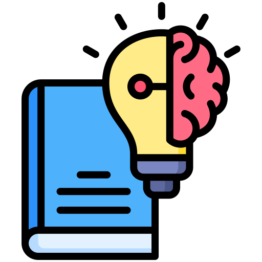

Découvrir le numérique
Ordinateur, applications, internet et règles de sécurité. Un « robot » humain pour comprendre qu'un ordinateur suit des instructions précises.
Un programme de 12 semaines pour les 8–15 ans : logique, programmation, création numérique et un vrai projet, présenté lors d'un Demo Day.
« Apprendre aujourd'hui, créer demain. »
Un programme pédagogique structuré pour apprendre la logique, la programmation, la création numérique et la réalisation de projets concrets. Le parcours est organisé selon l'âge, le niveau et l'autonomie de chaque enfant.

Raisonner étape par étape et apprendre à résoudre des problèmes.

Scratch, web et Python, selon l'âge et le niveau de l'enfant.

Imaginer et fabriquer des jeux, des sites et des applications.

Chaque enfant réalise un projet et le présente lors d'un Demo Day.
Quatre groupes pour que chaque enfant avance à son rythme, avec des défis à sa mesure.
Enfants et adolescents de 8 à 15 ans, répartis en quatre groupes selon l'âge et le niveau : Discover (8–9 ans), Explore (10–11 ans), Creator (12–13 ans) et Developer (14–15 ans).
Aucun niveau d'expert n'est attendu : le parcours démarre au niveau débutant. Un test de positionnement permet d'ajuster le groupe si le niveau technique ne correspond pas exactement à l'âge.
Comprendre, pratiquer, résoudre un problème et produire quelque chose : l'objectif n'est pas seulement d'apprendre une technologie, mais de savoir s'en servir pour créer.
À la fin des 12 semaines, chaque enfant a développé sa logique, acquis des compétences adaptées à son âge, réalisé un projet concret et appris à l'expliquer — avec l'envie de continuer à apprendre et à créer.


Chaque semaine suit le même fil : comprendre, pratiquer, créer, partager. Le formateur adapte la difficulté au niveau réel du groupe.
Ordinateur, applications, internet et règles de sécurité. Un « robot » humain pour comprendre qu'un ordinateur suit des instructions précises.
Ordre, séquence et algorithme : recettes, parcours, déplacement d'un personnage.
Interface, sprites, scènes, blocs de mouvement et événements. Mini-défi : une animation simple.
Messages, dialogues, arrière-plans et sons. Mini-projet : une petite histoire interactive.
Répéter, boucle infinie et répétition contrôlée, dans une animation ou un mini-jeu.
Si/alors, détection et règles du jeu : un personnage réagit à un obstacle ou à un événement.
Créer et modifier une variable pour ajouter score, vies ou compteur à un jeu.
Idée, règles, personnages, objectif, difficulté et scénario. Création du cahier d'idées du projet final.
Construction du projet final : décors, personnages, mouvements, règles et interactions.
Ajouter niveaux, sons, effets, bonus ou difficulté. Travail sur l'expérience utilisateur.
Tester le jeu, trouver les bugs, corriger, simplifier et préparer la démonstration.
Présentation devant le groupe et les parents : idée, démonstration et feedback.
Conditions, boucles et décomposition d'un problème. Exercices de logique et pseudo-code.
Messages, variables, conditions imbriquées, clones et interactions. Défi : un mini-jeu plus complet.
Conception, développement et test d'un jeu ou d'une animation. Débogage et amélioration.
Titres, paragraphes, images, liens et listes. Création d'une première page personnelle.
Couleurs, tailles, espacements, bordures, mise en page et classes.
Plusieurs sections ou pages, navigation et présentation d'un sujet choisi.
Variables, événements, fonctions simples et interactions avec l'utilisateur.
Questions, réponses, score et feedback. Introduction simplifiée au DOM.
Variables, types simples, entrées/sorties, conditions et boucles.
Un programme simple : quiz, calculateur, jeu de devinettes ou gestion de score.
Choix du projet, planification, développement et tests, en combinant les compétences acquises.
Démonstration du projet, explication des choix et feedback.
Décomposition, pseudo-code, conditions, boucles et fonctions.
Structure sémantique, formulaires simples, liens, médias et organisation d'une page.
Sélecteurs, box model, Flexbox, organisation responsive et design d'interface.
Variables, conditions, boucles, fonctions, événements et logique interactive.
Sélection et modification d'éléments HTML, événements et interface dynamique.
Un quiz, un calculateur, un gestionnaire de tâches simple ou une autre application web.
Syntaxe, variables, conditions, boucles, fonctions et structures de données simples.
Un petit programme avec entrées utilisateur, logique et traitement de données.
Besoin, utilisateurs, fonctionnalités, interface, contraintes et livrables.
Réalisation du projet en équipe, avec suivi technique et résolution des problèmes.
Tests fonctionnels, correction des bugs, documentation courte et préparation de la présentation.
Présentation de l'application, démonstration, questions/réponses et feedback.
Algorithmes, complexité intuitive, listes/tableaux, conditions, boucles et fonctions.
Variables, types, conditions, boucles, fonctions et bonnes pratiques de code.
Organisation du code, modules, lecture/écriture de fichiers et gestion des erreurs.
Une mini-application : gestion de données, quiz, outil ou jeu. Tests et amélioration du code.
Structure d'une interface, CSS moderne, responsive design et organisation d'un projet web.
Logique, fonctions, événements, DOM et interactions avancées.
Principe d'une API, requêtes, JSON et intégration de données externes.
Versioning, dépôt, commit, branches de base, historique et collaboration.
Besoin, utilisateurs, fonctionnalités, architecture, planning, rôles et critères de réussite.
Travail en équipe de 2–3 : fonctionnalités principales, intégration et suivi.
Tests, correction, README/documentation, préparation du pitch et de la démonstration.
Présentation finale devant le groupe et les parents : démonstration, questions/réponses et évaluation.
Chaque séance est active et orientée vers la création : on apprend une notion, on la pratique, puis on construit quelque chose avec.
10 min
Un défi court pour stimuler la réflexion et réactiver les connaissances.
15–20 min
Une nouvelle notion expliquée par démonstration et exemples.
20–30 min
Des exercices guidés, puis une autonomie progressive.
30–40 min
Construction du projet ou de la fonctionnalité du jour.
10 min
Démonstration, feedback et retour d'expérience.
Durées indicatives de chaque phase d'une séance.
Chaque participant réalise un projet adapté à son niveau, puis le présente lors du Demo Day.
G1 · Discover. Un jeu imaginé et construit de A à Z : personnages, règles, score et vies, niveaux, sons et effets.
G2 · Explore. Un mini-site personnel avec navigation, puis un projet qui combine les compétences acquises.
G3 · Creator. Une application conçue en équipe à partir d'un cahier des charges, avec tests et documentation courte.

G4 · Developer. Une application développée en équipe de 2–3, avec cahier des charges, API, Git/GitHub, tests et README.
L'événement final où les enfants présentent leur projet devant les autres participants et, idéalement, leurs parents : idée, démonstration, questions et feedback.

12 semaines, de la découverte jusqu'au Demo Day.
4 groupes selon l'âge et le niveau. Taille idéale : 6 à 8 enfants, avec 8 participants maximum par groupe.
Individuels pour les 8–11 ans pour développer l'autonomie ; en binômes ou équipes de 2–3 pour les 12–15 ans pour apprendre à collaborer.

Le formateur différencie les exercices au sein d'un même groupe : niveau standard, défi avancé ou accompagnement renforcé.

Il permet d'ajuster le groupe de l'enfant si son niveau technique ne correspond pas exactement à son âge.

Remplissez le formulaire ci-dessous. Pour connaître les prochaines sessions, les dates et les modalités, notre équipe vous répond directement.
Fonctionnalité, progression, qualité et finalisation.
Utilisation correcte des outils et technologies.
Compréhension des notions et capacité à les expliquer.
Originalité et capacité à proposer des idées.
Communication, collaboration et répartition des tâches.
Démonstration, explication et confiance.
Apprendre aujourd'hui, créer demain : inscrivez votre enfant et laissez-le construire son premier vrai projet.
Ce formulaire est à remplir par un parent ou un tuteur. Notre équipe vous contactera pour les prochaines étapes.
Votre demande d'inscription a bien été envoyée à l'équipe Codio Academy, qui vous contactera prochainement.